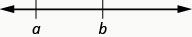

ماخذ: OpenStax Elementary Algebra 2e، باب Foundations، سبق «الجبرا دی زبان ورتو»۔ ایس قسط وچ ماڈیول دی پہچان، پنج مقصد، شروع دا نوٹ تے پہلا پورا تدریسی سیکشن نیں؛ مقصد باقی ماڈیول نوں وی آکھدے نیں، پر اوہ متن ایتھے ہجے شامل نہیں۔
مترجم دی اپنی رہنمائی — ماخذ توں وکھری
ایہہ Elementary Algebra 2e دے Use the Language of Algebra ماڈیول دا پہلا پورا تدریسی سیکشن اے، نال ماڈیول دا شروع دا نوٹ تے پنج سِکھن دے مقصد نیں۔ سارے مقصد ایتھے پورے ہو جان دا دعویٰ نہیں؛ ماڈیول دے اگلے سیکشن ہجے باقی نیں۔ اُتے تھلے لکھے عدد تے حسابی نشان اصل ماخذ دے نیں۔ پنجابی نثر سجّے توں کھبے اے، پر فارمولا تے اصل تصویراں دی سمت نہیں پلٹی گئی۔
ایس سبق وچ انگریزی دے لفظاں تے جملیاں نال ریاضی سِکھائی گئی اے۔ ایس لئی متعلقہ پنجابی ترجمے دے کول اصل انگریزی لفظ وی الگ نشان نال وکھائے نیں۔ ایہہ ہور گھڑے ہوئے حل نہیں، اصل ماخذ دے لفظ نیں۔ ساڈیاں اپنی وضاحتاں تے درُستیاں ہیٹھ وکھرے حصے وچ نیں۔ پنجابی بولن والے ماہر تے ریاضی دے استاد دی جانچ ہجے باقی اے۔
الجبرا دی زبان ورتو
ایس سیکشن وچ آون والے موضوعاں دا ہور کھُلّا تعارف الجبرا توں پہلاں دی ریاضی دے باب الجبرا دی زبان وچ مل سکدا اے۔
متغیر تے الجبرا دیاں علامتاں ورتو
فرض کرو ایس سال Greg دی عمر 20 سال اے تے Alex دی 23 سال۔ تسی جاندے او کہ Alex، Greg توں 3 سال وڈا اے۔ جدوں Greg دی عمر 12 سال سی، Alex دی 15 سال سی۔ جدوں Greg دی عمر 35 سال ہووے گی، Alex دی 38 سال ہووے گی۔ Greg دی عمر بھاویں جِنّی وی ہووے، Alex دی عمر ہمیشہ 3 سال ودھ ہووے گی، ہے نا؟ الجبرا دی زبان وچ، اسیں Greg دی عمر تے Alex دی عمر نوں متغیر (variables) تے 3 نوں مستقل آکھدے آں۔ عمراں بدل دیاں نیں («بدلدیاں رہندیاں نیں»)، پر اوہناں وچکار 3 سال دا فرق ہمیشہ اوہو رہندا اے («مستقل»)۔ کیوں جے Greg دی عمر تے Alex دی عمر وچ ہمیشہ 3 سال دا فرق ہووے گا، ایس لئی 3 مستقل اے۔
ایس ماخذی گل نال مترجم دی وکھری وضاحت وی پڑھو۔
الجبرا وچ اسیں متغیراں نوں دَسّن لئی حرفِ تہجی دے اکھر ورتدے آں۔ ایس لئی جے اسیں Greg دی عمر نوں g آکھیے، تاں Alex دی عمر دَسّن لئی ورت سکدے آں۔ جدول 1.2.1 ویکھو۔
| Greg دی عمر | Alex دی عمر |
|---|---|
جدول 1.2.1
سارے کالم ویکھن لئی لوڑ پئے تے جدول نوں پاسے سرکاؤ۔
ایہناں بدلدیاں عمراں نوں دَسّن والے اکھراں نوں متغیر آکھدے نیں۔ متغیراں لئی سبھ توں عام ورتے جان والے اکھر x، y، a، b تے c نیں۔
متغیر
متغیر اوہ اکھر اے جیہڑا کسے ایہو جیہے عدد نوں دَسّدا اے جیہدی قدر بدل سکدی اے۔
مستقل
مستقل اوہ عدد اے جیہدی قدر ہمیشہ اوہو رہندی اے۔
الجبرا دی صورت وچ لکھن لئی سانوں عدداں تے متغیراں دے نال حسابی عملاں دیاں کجھ علامتاں دی وی لوڑ اے۔ اسیں کئی قسماں دیاں علامتاں ورتاں گے۔
حساب دے چار بُنیادی عمل نیں: جمع، تفریق، ضرب تے تقسیم۔ ایہناں عملاں نوں دَسّن والیاں علامتاں اسیں ہیٹھلے جدول وچ لکھاں گے۔ شاید تسی ایہناں وچوں کجھ نوں پہلاں ای پہچاندے ہوو۔
| عمل | علامتی لکھت | بول کے پڑھو: | حاصل اے… |
|---|---|---|---|
| جمع | a جمع b اصل ماخذ دے انگریزی لفظ a plus b |
a تے b دا جوڑ اصل ماخذ دے انگریزی لفظ the sum of a and b |
|
| تفریق | a منفی b اصل ماخذ دے انگریزی لفظ a minus b |
a تے b دا فرق اصل ماخذ دے انگریزی لفظ the difference of a and b |
|
| ضرب | a ضرب b اصل ماخذ دے انگریزی لفظ a times b |
a تے b دی ضرب دا حاصل اصل ماخذ دے انگریزی لفظ the product of a and b |
|
| تقسیم | ایس ماخذی گل نال مترجم دی وکھری وضاحت وی پڑھو۔ |
a تقسیم b اصل ماخذ دے انگریزی لفظ a divided by b |
a نوں b نال ونڈن دا حاصل؛ a نوں ونڈیا جان والا عدد تے b نوں ونڈن والا عدد آکھدے نیں اصل ماخذ دے انگریزی لفظ the quotient of a and b, a is called the dividend, and b is called the divisor |
سارے کالم ویکھن لئی لوڑ پئے تے جدول نوں پاسے سرکاؤ۔
ایس ماخذی گل نال مترجم دی وکھری وضاحت وی پڑھو۔
اسیں ایہہ عمل دو عدداں اُتے کردے آں۔ علامتی صورت توں انگریزی وچ، یا انگریزی توں علامتی صورت وچ بدل دیاں، of تے and دے لفظاں ول دھیان دیو۔
اصل ماخذ دے انگریزی لفظ
We perform these operations on two numbers. When translating from symbolic form to English, or from English to symbolic form, pay attention to the words “of” and “and.”
ایس ماخذی گل نال مترجم دی وکھری وضاحت وی پڑھو۔
- 9 تے 2 دا فرق لین دا مطلب 9 تے 2 دی تفریق کرنا اے؛ ہور لفظاں وچ، 9 منفی 2، جیہنوں اسیں علامتی صورت وچ ایویں لکھدے آں:
ایس ماخذی گل نال مترجم دی وکھری وضاحت وی پڑھو۔
- 4 تے 8 دی ضرب دا حاصل لین دا مطلب 4 نوں 8 نال ضرب کرنا اے؛ ہور لفظاں وچ، 4 ضرب 8، جیہنوں اسیں علامتی صورت وچ ایویں لکھدے آں:
الجبرا وچ کراس دی نشانی ضرب دَسّن لئی نہیں ورتی جاندی، کیوں جے ایہہ نشانی بھُل پیدا کر سکدی اے۔ کی 3xy دا مطلب («تِن ضرب y») اے یا (تِن ضرب x ضرب y)؟ گل صاف رکھن لئی ضرب واسطے یا قوساں ورتو۔
ایس ماخذی گل نال مترجم دی وکھری وضاحت وی پڑھو۔
جدوں دو مقداراں دی قدر اکو ہووے، اسیں اوہناں نوں برابر آکھدے آں تے برابری دی نشانی نال جوڑدے آں۔
برابری دی علامت
نوں «a، b دے برابر اے» پڑھدے نیں
علامت نوں برابری دی نشانی آکھدے نیں۔
عدداں دی لکیر اُتے کھبے توں سجّے ول جاندیاں عدد وڈے ہوندے جاندے نیں۔ عدداں دی لکیر نال < تے > دیاں علامتاں سمجھائیاں جا سکدیاں نیں۔
نابرابری

چھوٹی سکرین اُتے پوری تصویر ویکھن لئی پاسے سرکاؤ، یا اصل تصویر وکھری کھولو۔ دو زبانی کنجی یا وضاحت وی ویکھو۔
{kind=link}
چھوٹی سکرین اُتے پوری تصویر ویکھن لئی پاسے سرکاؤ، یا اصل تصویر وکھری کھولو۔ دو زبانی کنجی یا وضاحت وی ویکھو۔
{kind=link}
عبارتاں a < b یا a > b نوں کھبے توں سجّے یا سجّے توں کھبے پڑھیا جا سکدا اے، بھاویں انگریزی وچ اسیں عام طور اُتے کھبے توں سجّے پڑھدے آں (جدول 1.2.2)۔ عام طور اُتے a < b تے b > a دا اکو مطلب اے۔ مثلاً 7 < 11 تے 11 > 7 دا اکو مطلب اے۔ ایس طرح a > b تے b < a دا اکو مطلب اے۔ مثلاً 17 > 4 تے 4 < 17 دا اکو مطلب اے۔
| نابرابری دیاں علامتاں | لفظ |
|---|---|
| a، b دے برابر نہیں اصل ماخذ دے انگریزی لفظ a is not equal to b |
|
| a < b | a، b توں گھٹ اے اصل ماخذ دے انگریزی لفظ a is less than b |
| a، b توں گھٹ یا اوہدے برابر اے اصل ماخذ دے انگریزی لفظ a is less than or equal to b |
|
| a > b | a، b توں وڈا اے اصل ماخذ دے انگریزی لفظ a is greater than b |
| a، b توں وڈا یا اوہدے برابر اے اصل ماخذ دے انگریزی لفظ a is greater than or equal to b |
جدول 1.2.2
سارے کالم ویکھن لئی لوڑ پئے تے جدول نوں پاسے سرکاؤ۔
حل کیتی مثال 1
الجبرا توں انگریزی وچ ترجمہ کرو:
اصل ماخذ دے انگریزی لفظ
Translate from algebra into English:
ایس ماخذی گل نال مترجم دی وکھری وضاحت وی پڑھو۔
(a) (b) (c) (d)
حل
(a)
17، 26 توں گھٹ یا اوہدے برابر اے
(b)
8، 17 منفی 3 دے برابر نہیں
(c)
12، 27 تقسیم 3 توں وڈا اے
(d)
y جمع 7، 19 توں گھٹ اے
اصل ماخذ دے انگریزی لفظ
(a)
17 is less than or equal to 26
(b)
8 is not equal to 17 minus 3
(c)
12 is greater than 27 divided by 3
(d)
y plus 7 is less than 19
الجبرا توں انگریزی وچ ترجمہ کرو:
اصل ماخذ دے انگریزی لفظ
Translate from algebra into English:
ایس ماخذی گل نال مترجم دی وکھری وضاحت وی پڑھو۔
(a) (b) (c) (d)
حل
(a) 14، 27 توں گھٹ یا اوہدے برابر اے (b) 19 منفی 2، 8 دے برابر نہیں (c) 12، 4 تقسیم 2 توں وڈا اے (d) x منفی 7، 1 توں گھٹ اے
اصل ماخذ دے انگریزی لفظ
(a) 14 is less than or equal to 27 (b) 19 minus 2 is not equal to 8 (c) 12 is greater than 4 divided by 2 (d) x minus 7 is less than 1
الجبرا توں انگریزی وچ ترجمہ کرو:
اصل ماخذ دے انگریزی لفظ
Translate from algebra into English:
ایس ماخذی گل نال مترجم دی وکھری وضاحت وی پڑھو۔
(a) (b) (c) (d)
حل
(a) 19، 15 توں وڈا یا اوہدے برابر اے (b) 7، 12 منفی 5 دے برابر اے (c) 15 تقسیم 3، 8 توں گھٹ اے (d) y جمع 3، 6 توں وڈا اے
اصل ماخذ دے انگریزی لفظ
(a) 19 is greater than or equal to 15 (b) 7 is equal to 12 minus 5 (c) 15 divided by 3 is less than 8 (d) y plus 3 is greater than 6
الجبرا وچ اکٹھا رکھن والیاں علامتاں، انگریزی دے کامیاں، دو نقطیاں تے ہور رموزِ اوقاف ورگیاں نیں۔ ایہہ صاف کردیاں نیں کہ کِہڑیاں جبری عبارتاں اکٹھیاں تے ہور عبارتاں توں وکھ رکھنیاں نیں۔ ہُن اسیں تِن قسماں نال واقف کراواں گے۔
اکٹھا رکھن والیاں علامتاں
ہیٹھ کجھ جبری عبارتاں دیاں مثالاں نیں جیہناں وچ اکٹھا رکھن والیاں علامتاں شامل نیں۔ ایس سیکشن وچ اگے اسیں ایہو جیہیاں عبارتاں نوں سادہ کراں گے۔
انگریزی وچ فقرے تے جملے وچ کی فرق اے؟ فقرہ اک ایہو جیہا خیال دَسّدا اے جیہڑا اپنے آپ وچ ادھورا ہووے، پر جملہ پوری گل دَسّدا اے۔ «بہت تیز بھجّنا» اک فقرہ اے، پر «فٹ بال دا کھڈاری بہت تیز بھجّ رِہا سی» اک جملہ اے۔ جملے وچ فاعل تے فعل ہوندے نیں۔ الجبرا وچ ساڈے کول جبری عبارتاں تے مساواتاں ہوندیاں نیں۔
اصل ماخذ دے انگریزی لفظ
What is the difference in English between a phrase and a sentence? A phrase expresses a single thought that is incomplete by itself, but a sentence makes a complete statement. “Running very fast” is a phrase, but “The football player was running very fast” is a sentence. A sentence has a subject and a verb. In algebra, we have expressions and equations.
ایس ماخذی گل نال مترجم دی وکھری وضاحت وی پڑھو۔
جبری عبارت
جبری عبارت اک عدد، اک متغیر، یا حسابی عملاں دیاں علامتاں نال عدداں تے متغیراں دا میل اے۔
جبری عبارت انگریزی فقرے ورگی ہوندی اے۔ ہیٹھ جبری عبارتاں دیاں کجھ مثالاں نیں:
ایس ماخذی گل نال مترجم دی وکھری وضاحت وی پڑھو۔
| جبری عبارت | لفظ | انگریزی فقرہ |
|---|---|---|
| 3 جمع 5 اصل ماخذ دے انگریزی لفظ 3 plus 5 |
تِن تے پنج دا جوڑ اصل ماخذ دے انگریزی لفظ the sum of three and five |
|
| n منفی اک اصل ماخذ دے انگریزی لفظ n minus one |
n تے اک دا فرق اصل ماخذ دے انگریزی لفظ the difference of n and one |
|
| 6 ضرب 7 اصل ماخذ دے انگریزی لفظ 6 times 7 |
چھے تے ست دی ضرب دا حاصل اصل ماخذ دے انگریزی لفظ the product of six and seven |
|
ایس ماخذی گل نال مترجم دی وکھری وضاحت وی پڑھو۔ |
x تقسیم y اصل ماخذ دے انگریزی لفظ x divided by y |
x نوں y نال ونڈن دا حاصل اصل ماخذ دے انگریزی لفظ the quotient of x and y |
سارے کالم ویکھن لئی لوڑ پئے تے جدول نوں پاسے سرکاؤ۔
دھیان دیو کہ ایہہ انگریزی فقرے پورا جملہ نہیں بناندے، کیوں جے فقرے وچ فعل نہیں اے۔
اصل ماخذ دے انگریزی لفظ
Notice that the English phrases do not form a complete sentence because the phrase does not have a verb.
ایس ماخذی گل نال مترجم دی وکھری وضاحت وی پڑھو۔
مساوات دو جبری عبارتاں نوں برابری دی نشانی نال جوڑ کے بندی اے۔ جدوں تسی مساوات دیاں علامتاں دے مطلب والے لفظ پڑھدے او، تاں انگریزی وچ اک پورا جملہ بن جاندا اے۔ برابری دی نشانی فعل دیندی اے۔
اصل ماخذ دے انگریزی لفظ
An equation is two expressions linked with an equal sign. When you read the words the symbols represent in an equation, you have a complete sentence in English. The equal sign gives the verb.
ایس ماخذی گل نال مترجم دی وکھری وضاحت وی پڑھو۔
مساوات
برابری دی نشانی نال جُڑیاں دو جبری عبارتاں نوں مساوات آکھدے نیں۔
ہیٹھ مساواتاں دیاں کجھ مثالاں نیں۔
| مساوات | انگریزی جملہ |
|---|---|
| تِن تے پنج دا جوڑ اٹھ دے برابر اے۔ اصل ماخذ دے انگریزی لفظ The sum of three and five is equal to eight. |
|
| n منفی اک چوداں دے برابر اے۔ اصل ماخذ دے انگریزی لفظ n minus one equals fourteen. |
|
| چھے تے ست دی ضرب دا حاصل بیالی دے برابر اے۔ اصل ماخذ دے انگریزی لفظ The product of six and seven is equal to forty-two. |
|
| x ترونجا دے برابر اے۔ اصل ماخذ دے انگریزی لفظ x is equal to fifty-three. |
|
| y جمع نَوں، دو y منفی تِن دے برابر اے۔ اصل ماخذ دے انگریزی لفظ y plus nine is equal to two y minus three. |
سارے کالم ویکھن لئی لوڑ پئے تے جدول نوں پاسے سرکاؤ۔
حل کیتی مثال 2
پتا کرو کہ ہر اک جبری عبارت اے یا مساوات:
(a) (b) (c) (d)
حل
| (a) | ایہہ مساوات اے—دو جبری عبارتاں برابری دی نشانی نال جُڑیاں نیں۔ |
| (b) | ایہہ جبری عبارت اے—برابری دی نشانی نہیں اے۔ |
| (c) | ایہہ جبری عبارت اے—برابری دی نشانی نہیں اے۔ |
| (d) | ایہہ مساوات اے—دو جبری عبارتاں برابری دی نشانی نال جُڑیاں نیں۔ |
سارے کالم ویکھن لئی لوڑ پئے تے جدول نوں پاسے سرکاؤ۔
پتا کرو کہ ہر اک جبری عبارت اے یا مساوات: (a) (b) ۔
حل
(a) مساوات (b) جبری عبارت
پتا کرو کہ ہر اک جبری عبارت اے یا مساوات: (a) (b) ۔
حل
(a) جبری عبارت (b) مساوات
فرض کرو سانوں 2 نوں نَوں وار ضرب کرن دی لوڑ اے۔ اسیں ایہنوں ایویں لکھ سکدے آں: ایویں لکھنا اَکّا دیندا اے تے سارے 2 گِن کے رکھنا اوکھا ہو سکدا اے، ایس لئی اسیں طاقتاں ورتدے آں۔ اسیں نوں تے نوں ایویں لکھدے آں: ایہو جیہیاں عبارتاں وچ، مثلاً عدد 2 نوں بنیاد تے 3 نوں طاقت آکھدے نیں۔ طاقت سانوں دَسّدی اے کہ بنیاد نوں کِنّی وار ضرب کرنا اے۔
ایس ماخذی گل نال مترجم دی وکھری وضاحت وی پڑھو۔
چھوٹی سکرین اُتے پوری تصویر ویکھن لئی پاسے سرکاؤ، یا اصل تصویر وکھری کھولو۔ دو زبانی کنجی یا وضاحت وی ویکھو۔
{kind=link}
ایس ماخذی گل نال مترجم دی وکھری وضاحت وی پڑھو۔
اسیں نوں «دو دی تیجی طاقت» یا «دو دا مکعب» پڑھدے آں۔
اسیں آکھدے آں کہ ، طاقت والی لکھت وچ اے تے ، کھول کے لکھی صورت وچ اے۔
طاقت والی لکھت
دا مطلب a نوں اپنے آپ نال n وار ضرب کرنا اے۔
ایس ماخذی گل نال مترجم دی وکھری وضاحت وی پڑھو۔

چھوٹی سکرین اُتے پوری تصویر ویکھن لئی پاسے سرکاؤ، یا اصل تصویر وکھری کھولو۔ دو زبانی کنجی یا وضاحت وی ویکھو۔
ایس ماخذی گل نال مترجم دی وکھری وضاحت وی پڑھو۔
جبری عبارت نوں a دی طاقت پڑھدے نیں۔
ایس ماخذی گل نال مترجم دی وکھری وضاحت وی پڑھو۔
بھاویں اسیں نوں «a دی طاقت» پڑھدے آں، پر عام طور اُتے ایویں پڑھدے آں:
ایس ماخذی گل نال مترجم دی وکھری وضاحت وی پڑھو۔
- «a دا مربع»
- «a دا مکعب»
اگے اسیں ویکھاں گے کہ تے دے وکھرے ناں کیوں نیں۔
جدول 1.2.3 وکھاندا اے کہ طاقتاں والیاں کجھ جبری عبارتاں اسیں کِویں پڑھدے آں۔
| جبری عبارت | لفظاں وچ |
|---|---|
| 7 دی دوجی طاقت یا 7 دا مربع | |
| 5 دی تیجی طاقت یا 5 دا مکعب | |
| 9 دی چوتھی طاقت | |
| دی پنجویں طاقت |
جدول 1.2.3
سارے کالم ویکھن لئی لوڑ پئے تے جدول نوں پاسے سرکاؤ۔
حل کیتی مثال 3
سادہ کرو:
حل
| عبارت نوں کھول کے لکھو۔ | |
| کھبے توں سجّے ول ضرب کرو۔ | |
| ضرب کرو۔ | |
| ضرب کرو۔ | 81 |
سارے کالم ویکھن لئی لوڑ پئے تے جدول نوں پاسے سرکاؤ۔
سادہ کرو: (a) (b)
حل
(a) 125 (b) 1
سادہ کرو: (a) (b)
حل
(a) 49 (b) 0
ساڈی اپنی وضاحت — ماخذ دے ترجمے توں وکھری
انگریزی تے اردو نال لفظاں دا پُل
variable لئی «متغیر» تے constant لئی «مستقل» ورتے نیں۔ متغیر اوہ اکھر اے جیہدی دَسّی قدر بدل سکدی اے؛ مستقل دی قدر ایس گل بات وچ اوہو رہندی اے۔ expression «جبری عبارت» تے equation «مساوات» اے؛ ایہہ دو ناں اکو چیز دے نہیں۔ اردو وچ وی «متغیر، مستقل، جبری عبارت، مساوات» دے ناں ملدے نیں۔ پنجابی جملیاں دا ڈھنگ، مثلاً «قدر بدل سکدی اے»، پنجابی رکھیا اے۔
sum «جوڑ»، difference «فرق»، product «ضرب دا حاصل» تے quotient «ونڈ دا حاصل» اے۔ اردو دے «مجموعہ، فرق، حاصلِ ضرب، حاصلِ تقسیم» نال ایہناں دا تعلیمی رشتہ اے۔ dividend اوہ عدد اے جیہنوں ونڈدے آں، تے divisor اوہ عدد اے جیہدے نال ونڈدے آں۔ inequality لئی «نابرابری» ورتی اے؛ اردو پُل «عدم مساوات» اے۔
base دا ایتھے ناں «بنیاد» تے exponent / power دی پڑھت لئی «طاقت» ورتی اے۔ تصویر وچ اُتے لکھیا عدد دَسّدا اے کہ بنیاد دے کِنّے اکو جیہے اجزا ورتنے نیں؛ اوہ پوری عبارت دی کڈھی ہوئی قدر نہیں۔ squared نوں «مربع» تے cubed نوں «مکعب» پڑھیا اے۔ exponential notation «طاقت والی لکھت» تے expanded notation «کھول کے لکھی صورت» اے۔ ایہہ پڑھائی لئی عبوری لفظی چوناں نیں، پنجابی دیاں سند یافتہ ریاضی اصطلاحاں دا دعویٰ نہیں۔
انگریزی سوال نوں چُپ چپیتے نہیں بدلیا
ماخذ آکھدا اے کہ الجبرا نوں انگریزی وچ پڑھو۔ پہلے سوال تے دونوں اگلے سوالاں وچ «انگریزی» دا لفظ اوہو مطلب رکھدا اے۔ اسیں اصل حل دے پنجابی مطلب دِتے نیں تے انہاں دے کول اصل انگریزی لفظ وی الگ وکھائے نیں، تاں جے تسی دونوں نال جوڑ پا سکو۔ جتھے اصل حل دے فارمولا پہلے ای اُتے نیں، انگریزی لفظاں دی وکھری پیشکش اوہ فارمولا مُڑ نہیں چھاپدی؛ حصہ (a)، (b)، (c)، (d) اوہو رہندا اے۔ انڈونیشی ترجمہ کئی ایتھے دے حوالیاں وچ اپنی زبان دا ناں ورتدا اے؛ اسیں اصل انگریزی تدریسی پس منظر قائم رکھیا اے۔
انگریزی of تے and مل کے «دو قدراں دا جوڑ، فرق یا ضرب» ورگے فقرے بناندے نیں۔ پنجابی وچ لفظاں دی ترتیب بدل سکدی اے، پر حساب وچ پہلا تے دوجا عدد نہیں بدلدے۔ ماخذ دے شروع دے نوٹ وچ Prealgebra تے The Language of Algebra اک ہور باب دا حوالہ نیں؛ اوہ پوری وکھری کتاب ایس حصے وچ شامل نہیں۔
انگریزی جمع دا آخری اکھر
عمراں والے پیرا وچ اصل انگریزی variable دے پچھے موٹا s آ کے variables بناندا اے۔ اسیں پنجابی «متغیر» دے نال پورا انگریزی لفظ وکھ رکھیا اے تے s اوہدے اندر موٹا ای رکھیا اے۔ ایہہ پنجابی لفظ دا لاحقہ نہیں۔ انڈونیشی فائل ایس موٹے اکھر دی تھاں خالی زور والا عنصر رکھدی اے؛ اسیں اوہ تبدیلی چُپ چپیتے نہیں لئی۔ پنجابی وچ جمع دا مطلب «عمراں … نیں» نال وی صاف اے۔ عمراں دے عدد ماخذ دے فرض کیتے عدد نیں؛ کوئی جنم دِن، تاریخ یا حقیقی بندے بارے گل نہیں گھڑی گئی۔
اصل جدول وچ ضرب دیاں پنج صورتاں نیں
عملاں والے جدول دیاں سطراں جمع، تفریق، ضرب تے تقسیم دی ترتیب وچ نیں۔ ضرب والی سطر وچ a·b، ab، (a)(b)، (a)b تے a(b)، یعنی پنج صورتاں نیں۔ اصل انگریزی متبادل بیان تفریق تے ضرب دے ناں اُلٹی ترتیب وچ دسدا اے تے چار صورتاں آکھ کے ab نوں چھڈّدا اے؛ اوہ آخری قوساں والی صورت وی ٹھیک طرح نہیں دسدا۔ انڈونیشی بیان ایہہ گل صاف کردا اے۔ اصل جدول تے اوہدے وفادار ترجمے والا بیان محفوظ نیں؛ اسکرین ریڈر لئی ساڈا درست کیتا بیان الگ نشان نال ورتیا اے۔
گھٹاؤن تے ونڈن وچ ترتیب
ماخذ دے تفریق والے فقرے دا حساب 9−2 اے: 9 وچوں 2 گھٹاؤ، اُلٹا نہیں۔ ایویں ای a÷b وچ a نوں b نال ونڈدے آں۔ عام تقسیم دیاں صورتاں وچ ونڈن والا عدد صفر نہیں ہو سکدا: b لئی b≠0 تے x/y لئی y≠0 شرط اے۔ ایہہ ساڈی وکھری حد دَسّن والی وضاحت اے، اصل جدول وچ خاموش تبدیلی نہیں۔
ضرب دا کراس تے متغیر والا اکھر
کراس والے پیرا وچ ماخذ الجبرا لئی × نہ ورتن دی گل کردا اے۔ ایتھے مقصد x اکھر نال بھُل توں بچنا اے، ریاضی دے ہر سیاق وچ × اُتے پابندی نہیں۔ ضرب دا نقطہ · تے اصل قوساں قائم نیں۔ 3xy وچ x تے y متغیر ہوون، تاں ایہہ 3·x·y اے؛ ماخذ ایس اکھر تے ضرب دے نشان وچ نظر دی بھُل سمجھاندا اے۔
فارمولیاں اندر رہن والے انگریزی لفظ
اصل پہلی نابرابری دی لکھت وچ is read دا مطلب «پڑھیا جاندا اے»، is less than دا «توں گھٹ اے»، is to the left of دا «دے کھبے پاسے اے» تے on the number line دا «عدداں دی لکیر اُتے» اے۔ دوجی لکھت وچ is greater than «توں وڈا اے» تے is to the right of «دے سجّے پاسے اے» نیں۔ a<b وچ a کھبے تے b سجّے اے؛ a>b والی اصل تصویر وچ b کھبے تے a سجّے اے۔
اکٹھا رکھن والے نشان وچ Parentheses «گول قوساں» ()، Brackets «چورس قوساں» [] تے Braces «گھنگھریالیاں قوساں» {} نیں۔ ایہہ شکل سمجھان والے عبوری ناں نیں۔ اصل فارمولیاں دے انگریزی لفظ، خالی خانے، قوساں تے ترتیب نہیں بدلے۔
فقرے تے مساوات دی مثال دی حد
فقرے تے جملے والی گل اک تدریسی مثال اے، ساری انگریزی یا پنجابی قواعد دی تعریف نہیں۔ انگریزی Running very fast وچ فعل دی اک صورت موجود اے، پر اوہ اپنے آپ وچ ماخذ والا پورا جملہ نہیں۔ ہیٹھلے حسابی فقرے the sum of three and five ورگے نیں؛ is equal to شامل ہون نال برابر ہون دی پوری گل بن دی اے۔ ایس لئی ماخذ دا «فعل نہیں» والا جملہ ایہناں مثالاں دے حوالے نال پڑھو، ہر فقرے بارے عام قانون نہ بناؤ۔
مساوات ہونا تے درست ہونا وی دو وکھ گلاں نیں۔ برابری دی نشانی نال جُڑیاں عبارتاں مساوات بناندیاں نیں؛ اوہ ہر متغیر دی ہر قدر لئی لازماً درست نہیں ہوندی۔ ایتھے جتھے سوال عبارت تے مساوات پہچانن نوں آکھدا اے، اسیں اوہو پہچان دِتی اے، نواں حل کڈھن دا سوال نہیں بنایا۔
اجزا گنو، ضرب دیاں کارروائیاں نہیں
طاقت والی اصل تعریف وچ «اپنے آپ نال n وار ضرب» لکھیا اے۔ ایتھے بار بار ضرب والی وضاحت n مثبت صحیح عدد ہون لئی اے۔ a^n وچ a دے n برابر اجزا ضرب ہوندے نیں؛ دو دو عدداں نوں اک دوجے نال ضرب کرن دی n−1 کارروائیاں ہوندیاں نیں۔ ایس لئی 2^3 لئی 2·2·2 دے تِن اجزا تے دو ضرباں نیں، تے 2^9 لئی نَوں اجزا تے اٹھ ضرباں نیں۔ انڈونیشی تعریف اجزا دی گنتی تے مثبت صحیح عدد دی شرط صاف کردی اے۔ اسیں اوہنوں اصل انگریزی وچ ملا کے نہیں لکھیا؛ ایہہ ساڈی وکھری وضاحت اے۔
دو تے تِن والی اصل تصویر اُتے base دا تیر بنیاد 2 ول تے exponent دا تیر اُتے لکھے 3 ول اے۔ اوہدے اپنے انگریزی جملے وچ وی «تِن وار» والی ایہو گل اے۔ ساڈا الگ متبادل بیان صاف آکھدا اے کہ تِن برابر اجزا نیں۔ عام صورت والی تصویر وچ n factors دا مطلب «n ضربی اجزا» اے۔ اصل تصویر دے لفظ تے پکسل نہیں بدلے۔ ایس ابتدائی وضاحت توں صفر، منفی یا کسر والی طاقت دے سارے قاعدے فرض نہ کرو۔
اُتے لکھے انگریزی th اکھر
طاقت پڑھن والے جملے تے اوہدے اگلے جملے وچ ماخذ n دے اُتے th لکھ کے انگریزی ترتیب والا لفظ nth بناندا اے۔ ایتھے ایہہ n دی th طاقت نہیں، نہ t تے h دی ضرب اے۔ پنجابی مطلب «n ویں طاقت» اے۔ انڈونیشی فائل اوہ لکھت صرف n بنا دیندی اے؛ اسیں اصل MathML قائم رکھ کے ایہہ وکھری وضاحت دِتی اے۔
ایہہ ماڈیول دا صرف پہلا پورا تدریسی سیکشن اے۔ اگلا سیکشن حسابی عملاں دی ترتیب اے؛ ماڈیول دے باقی حصے، مشقاں تے ساری مقرر اسائنمنٹ ہجے مکمل نہیں۔ پنجابی بولن والے ماہر، ریاضی دے استاد تے مددگار پڑھت والے اوزاراں دی انسانی جانچ ہجے باقی اے۔
اگلا ضروری سیکشن Simplify Expressions Using the Order of Operations، پہچان fs-id1170654953465 اے۔ پورا ماڈیول، پوری کتاب تے پنجاں مقررہ کتاباں دا کم ہجے جاری اے۔